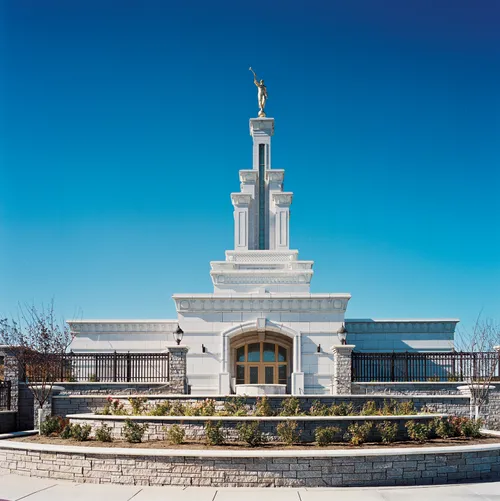
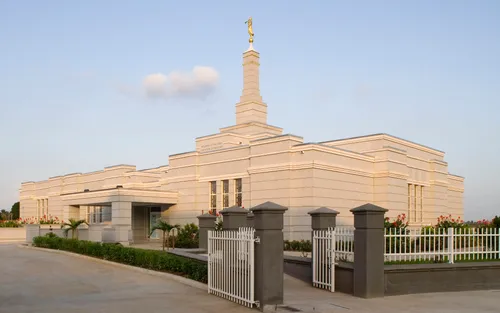
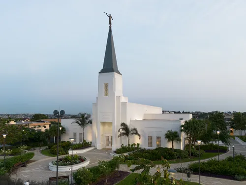
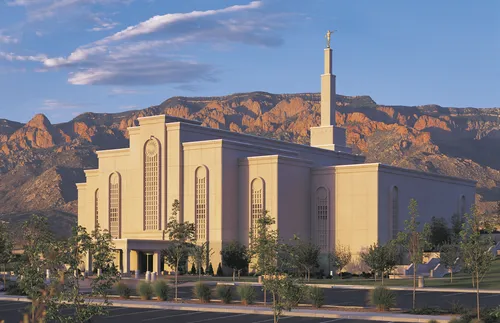

Home

Templo Columbia River, Washington

Templo de Aba, Nigeria

Templo de Abidján, Costa de Marfi
Templo de Accra, Ghana
Templo de Adelaida, Australia
Templo de Alabang, Filipinas

Templo de Albuquerque, Nuevo México
Templo de Anchorage, Alaska
Templo de Budapest, Hungría